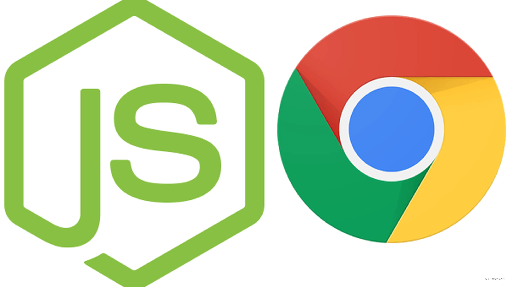

JavaScript 是一种功能强大的编程语言，用于创建交互式网页和动态用户界面。与其它编程语言一样， JavaScript 代码可能包含错误，这些错误可能会导致异常、错误或崩溃。
调试，是发现和修复这些错误的过程，它是任何 JavaScript 开发人员的必备技能。
在本文中，我们将讨论一些可以帮助您调试 JavaScript 的工具和技术
浏览器控制台是一种内置的调试工具，在大多数现代网络浏览器中都可用。它允许您查看网页上运行的 JavaScript 代码并与之交互，它还提供用于调试和错误报告的工具。要打开控制台，只需右键单击网页并选择“检查”或“检查元素”。然后，导航到“控制台”选项卡。
在控制台中，您可以查看当前页面的 JavaScript 代码并与之交互，包括变量、函数和对象。您还可以分别使用 console.log() 和 console.error() 函数打印消息和错误。这些消息可以帮助您跟踪代码流并确定可能出现错误的位置。
条件断点是一种强大的调试工具，它允许开发人员仅在满足特定条件时暂停代码执行。这在调试多次调用的循环或函数时特别有用。
例如，假设我们有一个遍历对象数组的循环，我们只想在特定属性的值为特定值时暂停代码执行。通过添加检查属性值的条件断点，我们可以快速找到有问题的代码。
调试器是一种强大的工具，可让您单步执行代码并检查其在不同时间点的状态。这可以帮助您识别代码中特定点可能发生的错误，或者可能由代码不同部分之间的交互引起的错误。
大多数现代 Web 浏览器都包含一个内置的调试器，可以通过开发人员工具进行访问。要使用调试器，只需打开开发人员工具，导航到“源代码”选项卡，然后选择要调试的 JavaScript 文件。然后，通过单击希望调试器停止的行号在代码中设置断点。当代码到达断点时，调试器将暂停执行并允许您检查代码的状态。
作为 JavaScript 开发人员的另一个必备要素是 linter！它是一种分析代码错误、风格违规和其他问题的工具。它可以帮助您识别可能由不正确的语法、拼写错误的变量名称或其他常见错误引起的错误。 Linters 还可以帮助您执行编码标准和最佳实践，从而提高代码的整体质量和可读性。
有许多可用的 JavaScript linter，包括 JSLint、ESLint 和 JSHint。这些工具可以集成到您的开发环境或构建过程中，并且可以对其进行配置以匹配您的编码标准和偏好。
探查器是一种帮助您分析代码性能的工具。它可以帮助您识别慢速或资源密集型函数、识别内存泄漏并优化代码以获得更好的性能。探查器还可以帮助您识别可能由低效算法或其他与性能相关的问题引起的错误。
大多数现代网络浏览器都包含一个内置的分析器，可以通过开发人员工具访问。要使用分析器，只需打开开发人员工具，导航到“性能”选项卡，然后启动分析会话。然后，像往常一样与您的网页或应用程序交互，探查器将记录和分析您的代码的性能。很方便，对吧？
Jest、Mocha 和 Jasmine 等测试框架可用于为您的 JavaScript 代码编写单元测试。这些框架允许您编写测试用例来验证代码的预期行为。通过运行这些测试，您可以快速确定是否有任何代码更改导致了意外行为或引入了新错误。
例如，如果您有一个接受两个数字并返回它们之和的函数，您可以编写一个测试用例以确保该函数针对不同的输入值返回正确的结果。如果您修改函数并且它不再通过测试，您就知道更改引入了错误。
测试框架还可以帮助您在开发过程中及早发现错误，从而使调试更加轻松快捷。此外，这些框架可以帮助您确保您的代码满足特定的质量标准，并随着时间的推移保持可靠和可维护。
Sentry 和 Rollbar 等错误跟踪服务可用于实时跟踪 JavaScript 代码中的错误和异常。这些服务提供详细的错误日志，包括错误消息、堆栈跟踪和发生错误的行号等信息。
通过监控这些日志，您可以在错误发生时快速识别和诊断错误，从而在它们影响您的用户之前修复它们。这些服务还可以帮助您识别反复出现的错误并跟踪它们的频率，从而更轻松地确定最关键问题的优先级并修复它们。
调用堆栈是一种跟踪程序执行的数据结构。它记录了导致当前执行点的函数调用序列。当代码中出现错误时，检查调用堆栈可以帮助确定错误的来源。
在 JavaScript 中，开发人员可以使用浏览器内置的开发人员工具来检查调用堆栈。这些工具提供调用堆栈视图以及错误消息。还可以使用 console.trace() 函数将调用堆栈记录到控制台，该函数打印导致当前执行点的函数调用的踪迹。
实时编辑是一种调试技术，允许开发人员在代码运行时对其进行修改。这在无法在开发环境中重现问题或开发人员希望实时查看更改的影响的情况下非常有用。
一种流行的 JavaScript 实时编辑工具是 Chrome DevTools。借助 DevTools，开发人员可以在“源代码”选项卡中编辑代码，并在浏览器中查看立即应用的更改。这对于试验不同的解决方案或快速测试对代码的更改很有用。
另一个用于实时编辑的工具是 Node.js 调试器。这允许开发人员从命令行调试他们的代码，并在代码运行时对其进行更改。调试器可以使用 --inspect 标志启动并通过 Chrome DevTools 访问。
代码审查是调试 JavaScript 的重要方法，它允许多个开发人员一起在一个代码库上工作，并在开发过程中及早发现错误。
代码审查可以采用多种不同的形式，但通常涉及多个人检查代码库并寻找问题。这可以通过多种方法完成，例如：
结对编程：两名开发人员在同一个代码库上一起工作，一名开发人员编写代码，而另一名开发人员实时审查代码。这允许立即反馈和纠正错误。
手动代码审查：一名或多名开发人员通读代码库，寻找错误、不一致之处和改进代码的机会。这可以使用文本编辑器或专门的代码审查软件等工具手动完成。
自动代码审查：开发人员使用工具来分析代码中的常见错误，例如语法错误、变量误用或性能问题。这些工具可以集成到持续集成管道中，以在问题到达生产环境之前自动捕获它们。
有效代码审查的一些最佳实践包括：
建立明确的指导方针：确保每个人都知道代码审查过程的内容，包括审查人员的角色和成功的标准。
关注特定问题：与其尝试一次审查所有内容，不如关注性能、安全性或可维护性等特定问题。
使用工具来协助：利用代码审查工具，例如 linters、静态分析器或 IDE 插件，使流程自动化并提高一致性。
鼓励反馈和交流：确保审阅者可以相互交流并与代码作者交流，提出问题并提供改进建议。
优先考虑代码审查：使代码审查成为开发过程的常规部分，而不是事后才想到的，以便及早发现错误并确保高质量的代码。
调试 JavaScript 代码可能是一项具有挑战性的任务，但使用正确的工具和技术，它也可能是一项有益的任务。总的来说，有效的 JavaScript 调试的关键是结合使用这些不同的方法和工具。无论您是初学者还是经验丰富的开发人员，掌握调试的艺术都是在 JavaScript 开发领域取得成功的必备技能！！！